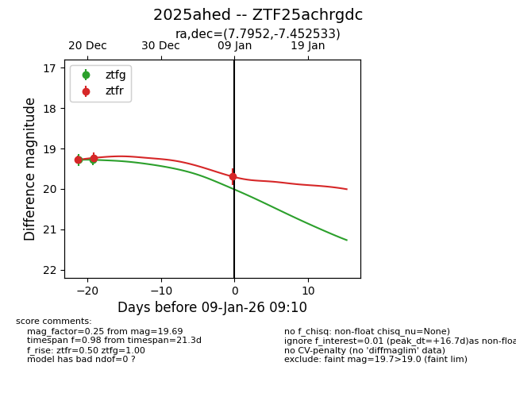
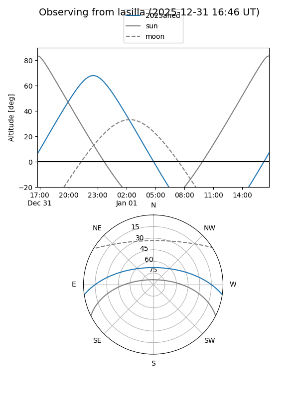
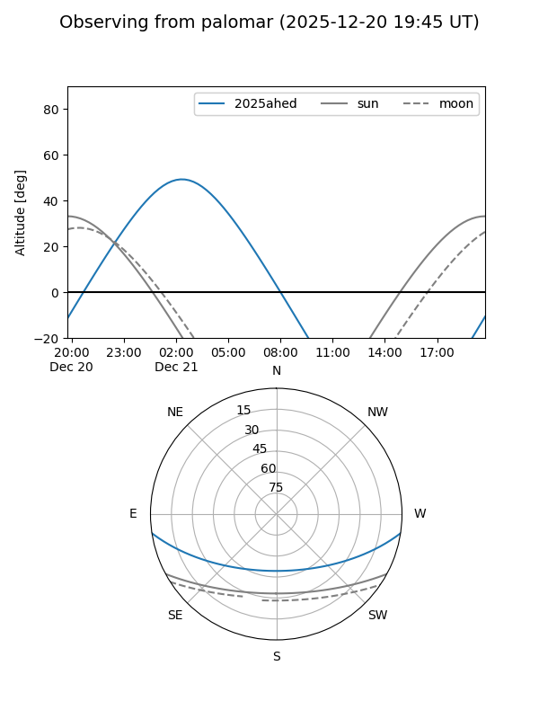
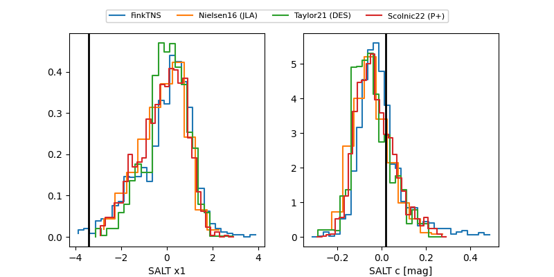

2025ahed
Target 2025ahed at 2026-01-09 03:05
Aliases and brokers:
FINK:
Lasair:
ALeRCE:
TNS:
YSE:
alt names
ZTF25achrgdc (ztf,fink_ztf)
2025ahed (tns,yse)
Coordinates:
equatorial (ra, dec) = 7.7952,-7.45253
equatorial (HMS+DMS) = 00:31:10.84,-07:27:09.12
galactic (l, b) = (108.2862,-69.74620)
Flags:
Photometry:
last ztfg=19.28, ztfr=19.69
2 ztfg, 3 ztfr detections
Lightcurve

Visibility


Additional plots
